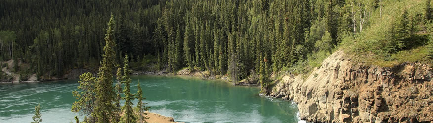
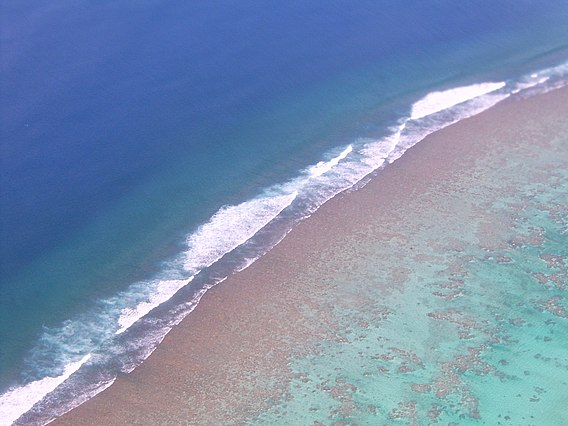
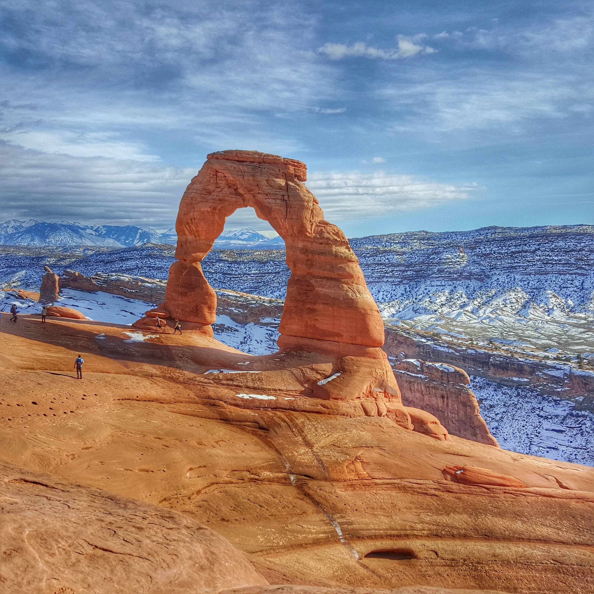
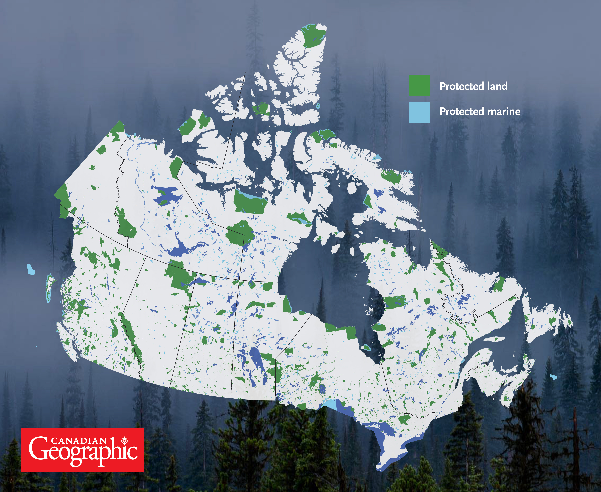

Humans are contributing to the destruction of natural ecosystems all over the world. We rely heavily on our ecosystems for things like food production and forestry.
One third[1] of all land is degrading. This greatly harms our planet's biodiversity.
A solution to the degradation of the these natural environments is establishing protected areas. Protected areas can help to conserve Earth's natural habitats and sustain all kinds of wildlife.
By maintaining protected areas, we are also able to contribute to processes like carbon storage and flood prevention.[2]
The following is a list of websites that can give you more information on the topic of protected areas.



Hover for image info!